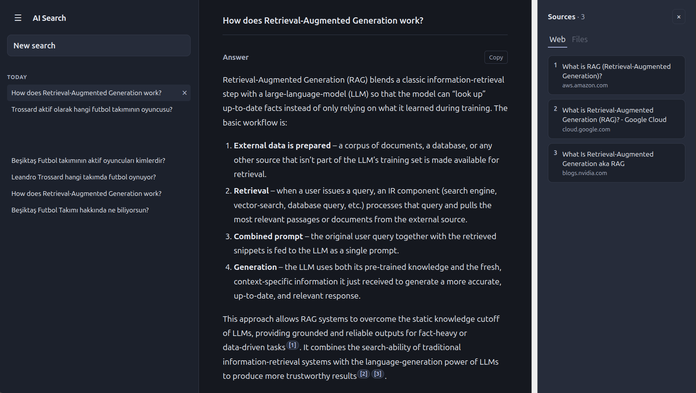

Scoped retrieval
Web evidence is temporary per request, while file chunks stay tied to a selected conversation until cleanup.
CASE STUDY / AI RESEARCH
A citation-aware research workspace for searching the live web and selected documents, then inspecting the evidence behind each answer.

OVERVIEW
AI Search Engine brings live Tavily retrieval and selected PDF, TXT, Markdown, or DOCX documents into one conversation. Answers stream progressively and keep their own source list so citations remain inspectable over time.
ARCHITECTURE
React/Vite provides the workspace, local IndexedDB history, deep links, and streamed rendering.
FastAPI handles search, answer, streaming, upload, document deletion, and orchestration.
Tavily search → fetch/extract → chunk → request-scoped Qdrant retrieval → cleanup.
Selected conversation documents are extracted, persistently indexed, and retrieved by scope.
Citation-aware context is passed to an Ollama provider; sources return with the answer.
Per-message Web and File sources are available in a desktop panel or mobile drawer.
TECHNICAL DECISIONS
Web evidence is temporary per request, while file chunks stay tied to a selected conversation until cleanup.
Inline citation markers connect to preserved source lists, making evidence easier to inspect.
POST + fetch with ReadableStream SSE parsing renders progress and answer deltas as they arrive.
The deterministic offline quality gate reports 29/29 passes; citation metrics are structural regression checks, not factual correctness claims.
TRY IT
Production runs on a Vercel frontend with a FastAPI backend on Render. The free-tier backend may cold-start after inactivity.